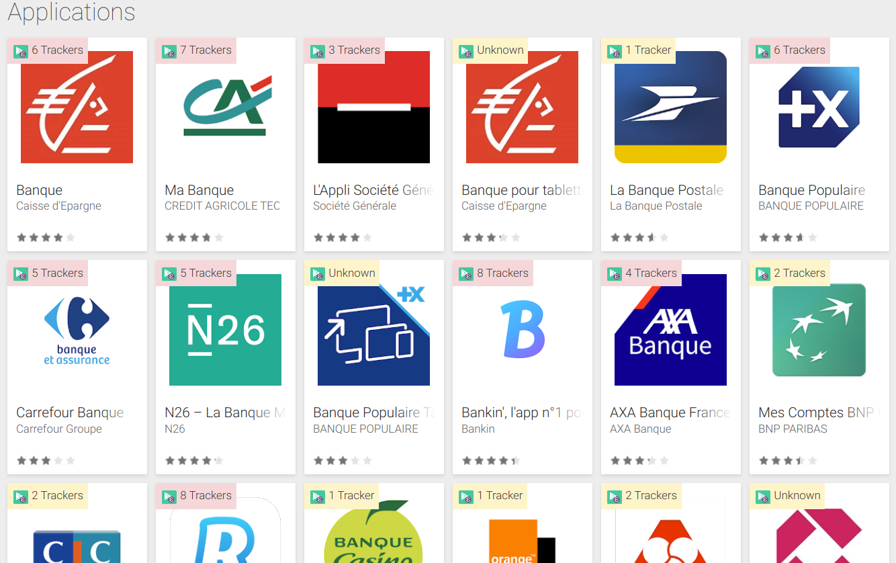
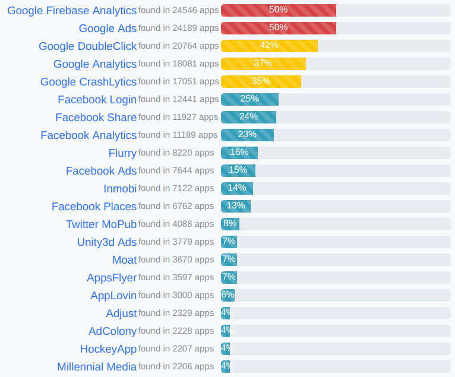

Exodus Privacy - FOSDEM 2019
Exodus Privacy at FOSDEM 2019
Who we are
What we will talk about
- The behavior of mobile applications and its consequences for our privacy
- What Exodus Privacy tries to do against that
Exodus Privacy
- Group of French hacktivists
- Non-profit organization founded in October 2017
- Undefined number of members
- Strict legal rules
- 2 main collaborations:
- We do FLOSS
Make people aware of permanent tracking on smartphones
How we do
- Develop the εxodus privacy auditing platform
- Identify trackers by code signatures
- Statically analyze
APK files
We develop a transparency tool allowing people to know what is embedded in Android applications.
What we call a tracker
A tracker is a piece of software meant to collect data about you or your usages.
Like Ogury, Google Analytics, Teemo, and many other.
How we detect them
Static analysis
- List Java classes embedded in the APK
- Find classes matching the tracker code signature
- Gplaycli: download the APK and get application details from Google Play
- Androguard: get permissions, code version and certificates
- Dexdump: extract list of classes from APK file
Inside εxodus web platform
Exodus Privacy Android Application
- Show the trackers and required permissions in the apps in your smartphone
- Available on F-Droid and Google Play!
Exodify: Exodus Privacy in your browser
- Browser extension for Firefox and Chrome
- Displays the number of trackers embedded in each application
- Quick link to submit the application for a new analysis
Exodify: Exodus Privacy in your browser

What about developers?
exodus-standalone
- εxodus CLI client for local APK static analysis
- Can be used by developers to scan their own app before release
- Prints reports as simple text or JSON
What we did during the last past year
- We effectively exist since 24/11/2017 - first public release
- We have identified 152 trackers and analyzed +48000 applications
- We helped developers and companies like Qwant to clean their applications
- We provided a lot of advice and courses to developers who want to respect privacy
- We did deep audits of several applications like Baby+
- We provided statistics and data sets to journalists and labs
- We opened a REST API
- We created 3 animation videos to explain trackers to the public
Everything is free and open 🎄
Most frequent trackers

We are in the press too
- MotherBoard - The Targets of Mobile Apps: Your Health, Your Ancestors, [...]
- Numerama - Lutter contre les mouchards des apps, une cause citoyenne : [...]
- The Guardian - Three quarters of Android apps track users with third party tools
- BoingBoing - Researchers craft Android app that reveals to find horrific [...]
- Le Monde - Des mouchards cachés dans vos applications pour smartphones
- Next Inpact - Rencontre avec Exodus Privacy, qui révèle les trackers [...]
- The Intercept - Staggering Variety of Clandestine Trackers Found in Popular [...]
- +8000 articles in +20 languages during the first 6 months
We are known by the CNIL
On Feb. 14th 2018 we met the people from "CNIL" (France Supervisory Authority) in their office in Paris.
Exchanges were very interesting from both sides and their interest is promising.
The CNIL will use εxodus for preliminary investigations.
Even French TV knows about us
We made, for the French public TV channel France2, a TV report about Waze application and all the "unknown leaks" of GPS data.
The report was broadcast on Feb. 24th 2018.
The replay can be found on Youtube.
Communication
We use different ways to make us visible:
- Stickers ☺
- Flyers
- Peertube and YouTube channel
- Mastodon, Twitter and Facebook accounts
- Conferences like today
What's next
- Revamp the reports to make them more readable and comprehensive
- Create more videos and podcasts to explain tracking on mobile
- Continue to animate a Facebook page, a Peertube and a Youtube channel
- Translate our media and tools into new languages
- Gather more and more motivated people to increase our volunteers number
- ...
What we need
We are a non-profit organization animated by volunteers. To stay alive, we need:
Help!
Contributions & Money